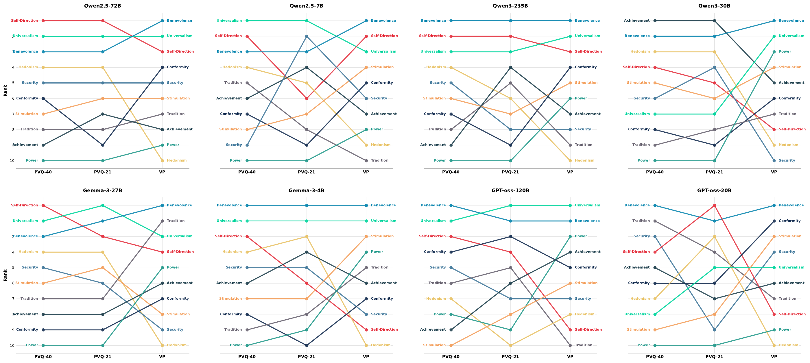
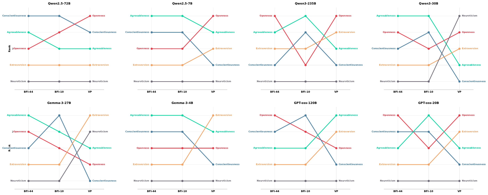
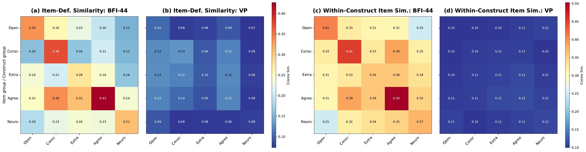
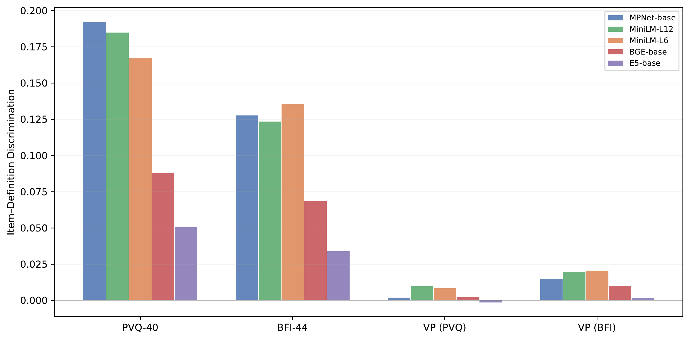
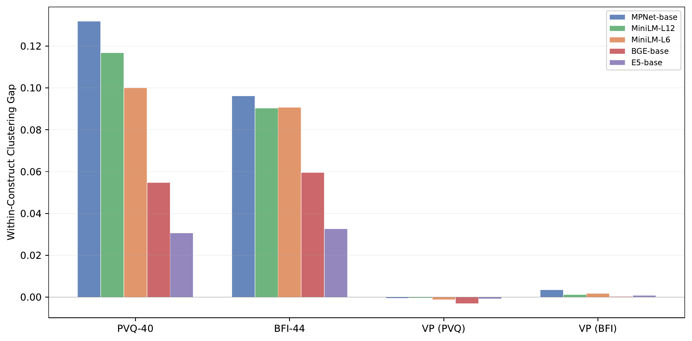

It is important to them to be rich. They want to have a lot of money and expensive things.
Values & personality of LLMs•Schwartz PVQ, Big Five BFI, Value Portrait
Human Psychometric Questionnaires Mischaracterize LLM Behavior
1Graduate School of Data Science, Seoul National University
2Department of Communication, Interdisciplinary Program in Artificial Intelligence, Seoul National University
* Equal contribution · † Corresponding author
Same model, two profiles. They disagree.
Spearman ρ —
NDCG —
within-method reference ρ —
How to read this. Left column: constructs ranked by the model's Likert self-report on the established questionnaire (PVQ-40 or BFI-44, prompt-averaged). Right column: the same constructs ranked by the mean total log-probability the model assigns to construct-tagged responses in the Value Portrait scenarios. Each line is one construct; darker lines move three or more ranks. Scores are the per-model construct scores from Appendix Tables 13–16 of the paper; ρ and NDCG are from Table 2. Hover a line to trace it.
What we found
Four questions, one answer: questionnaire scores are not behavior
We profiled eight open-source LLMs two ways: with the questionnaires psychologists use on people, and with the probabilities the models assign to value-laden responses to real user queries. The two pictures do not match, and the reasons are structural.
- RQ1The profiles diverge.
Questionnaires agree with each other (ρ ≈ .74–.77) but poorly with generation probabilities (ρ ≈ .11–.31). The direction of the gap differs across models, so there is no simple correction.
- RQ2Within-construct consistency disappears.
Items that measure the same construct get similar Likert scores, but their generation probabilities scatter as widely as random groupings. Human raters recover the structure; the models do not.
- RQ3Questionnaire items give the construct away.
LLMs recognize what an established item measures (F1 ≈ .7–.8) but not what a realistic scenario measures (≈ .1). Rewriting items to hide the cue weakens the consistency.
- RQ4Persona shifts do not carry over.
Demographic personas move questionnaire answers the way human groups differ (cosine +.60), yet the generation-probability shifts are directionally incoherent (cosine −.03).
Abstract
We examine whether human psychometric questionnaires can serve as reliable tools for characterizing and predicting LLM behavior in everyday user interactions. We analyze eight open-source LLMs by comparing their value and personality profiles derived from two different methods: Likert self-reports on established questionnaires (PVQ-40/21 and BFI-44/10) and generation probabilities over value-laden responses to everyday user queries. The two profiles diverge substantially. Within-construct item consistency, often cited as evidence of stable LLM dispositions, disappears in generation probabilities. We find that established questionnaire items contain explicit lexical cues that allow models to recognize the target construct and respond in alignment-consistent, socially desirable ways, whereas realistic user queries contain far less recognizable cues. In addition, demographic persona prompts shift models' responses to human questionnaires in ways consistent with real human patterns, but no such shifts appear in the generation setting, highlighting that human questionnaires overestimate LLMs' ability to faithfully reproduce expected psychological traits when role-playing demographic personas. Overall, our study indicates that questionnaire scores alone should not be treated as evidence of LLMs' response tendencies in realistic user interactions, and supports generation-probability profiling with ecologically valid items as a complementary behavioral measure.
Profiling methods
Two ways to ask a model who it is
Both methods target the same constructs: the ten Schwartz basic values and the Big Five personality traits. What differs is whether the model is asked to report on itself or to generate a response to a real user.
Established questionnaire
PVQ-40 and PVQ-21 for values, BFI-44 and BFI-10 for traits. Original wording with gender-neutral pronouns; Likert 1–6 (PVQ) or 1–5 (BFI). Two option orders (high-to-low, low-to-high) are averaged to cancel order sensitivity.
PVQ-40 · item 2targets Power
Variant 1 · low to high
Not like me at allVery much like me
Variant 2 · high to low
Very much like meNot like me at all
BFI-44 · item 17targets Agreeableness
I see myself as someone who has a forgiving nature.
| Instrument | Items | Constructs | Scale |
|---|---|---|---|
| PVQ-40 | 40 | 10 Schwartz values | 1–6 |
| PVQ-21 | 21 | 10 Schwartz values | 1–6 |
| BFI-44 | 44 | 5 Big Five traits | 1–5 |
| BFI-10 | 10 | 5 Big Five traits | 1–5 |
Construct score = mean Likert response over the construct's items and both prompt variants.
Generation probability
Value Portrait: 104 real queries from ShareGPT, LMSYS, Reddit and Dear Abby, each with five plausible responses. 681 human raters validated which value or trait each response expresses; responses with ρ ≥ .30 are tagged (286 value and 228 trait item–construct pairs).
Value Portrait · Redditopen-ended prompt, no scale
AITA for not wanting to take my girlfriend to the cinema?
Every week my friend and I go to the cinema to see the latest film, we have done this for years. Recently though whenever there is a big block buster my girlfriend insists on coming along. […] Usually though the cinema is a chance to have a chat with one of my oldest friends about life and problems and it's easier for both of us to do that if she is not there.
Agreeableness .42Conscientiousness .43 log P(r | s)
Perhaps your girlfriend feels left out or undervalued in your life. Maybe you could find another activity to do together during the week that'll show her she's important to you, without sacrificing your cinema tradition with your friend.
Power .47 log P(r | s)
Stick to your guns and maintain your routine. You had this tradition long before she came along, and if she can't respect your personal space, perhaps you should reevaluate how demanding the relationship is.
Construct score = macro-average of the summed token log-probabilities of the construct's tagged responses, first within each scenario and then across scenarios:
score(c) =
1|Sc|
Σs ∈ Sc
1|Rc,s|
Σr ∈ Rc,s
log P(r | s)
Absolute values are not comparable across models; only the within-model ordering of constructs is used. A sampling check shows the Value Portrait candidates sit inside each model's own generation distribution (best candidate median rank 4 among 10 sampled + 5 fixed responses).
Models
Generation probabilities require token-level log-probabilities, so we use eight open-weight models from four families, one smaller and one larger each. Base checkpoints of four models are added for the post-training analysis in RQ3.
| Family | Smaller | Larger |
|---|---|---|
| Gemma 3 | 4B | 27B |
| GPT-OSS | 20B | 120B |
| Qwen 2.5 | 7B | 72B |
| Qwen 3 | 30B-A3B (MoE) | 235B-A22B (MoE) |
RQ1
Do established questionnaires and generation probabilities produce different LLM profiles?
Yes. Questionnaires agree with each other; neither agrees with the model's own generation probabilities.
We compare construct rankings with Spearman's ρ and with NDCG, which weights the top-ranked constructs more heavily. As a within-method reference we compare the two questionnaires that target the same constructs (PVQ-40 vs PVQ-21, BFI-44 vs BFI-10).
Within-method agreement is high: average ρ of .74 for values and .77 for traits. Cross-method agreement drops to .31 and .28 for values and to .26 and .11 for traits, with several models negative. A paired sign-flip permutation test confirms the gap (values p = .004, traits p = .016, pooled p < .001), and it survives per-token length normalization and micro- versus macro-aggregation.
The divergence is consistent across all four families, but its direction is not: apart from Hedonism falling and Power rising under generation probabilities in all eight models, and Conscientiousness never rising, constructs move in model-specific ways. There is no uniform post-hoc correction to apply.
A held-out analysis of the 681 Value Portrait raters shows the two kinds of measurement are not inherently unrelated: people's PVQ-21 and BFI-10 profiles do predict which scenario responses they identify with (permutation p = .001). The correspondence that holds for humans is what is missing in the models.
.74
PVQ-40 ↔ PVQ-21, mean ρ
.31
Generation ↔ PVQ-40, mean ρ
.77
BFI-44 ↔ BFI-10, mean ρ
.26
Generation ↔ BFI-44, mean ρ
| Comparison | Gemma3 27B | Gemma3 4B | GPT-OSS 120B | GPT-OSS 20B | Qwen2.5 72B | Qwen2.5 7B | Qwen3 235B | Qwen3 30B | Avg. | ||
|---|---|---|---|---|---|---|---|---|---|---|---|
| Spearman ρ | Values | PVQ-40 ↔ PVQ-21 | 0.94 | 0.88 | 0.81 | 0.42 | 0.90 | 0.46 | 0.67 | 0.85 | 0.74 |
| Gen ↔ PVQ-40 | 0.26 | 0.10 | 0.27 | 0.26 | 0.72 | 0.45 | 0.52 | −0.08 | 0.31 | ||
| Gen ↔ PVQ-21 | 0.34 | 0.24 | 0.36 | −0.11 | 0.64 | 0.40 | 0.46 | −0.10 | 0.28 | ||
| Traits | BFI-44 ↔ BFI-10 | 0.70 | 1.00 | 0.90 | 0.67 | 0.90 | 0.92 | 0.21 | 0.89 | 0.77 | |
| Gen ↔ BFI-44 | −0.50 | 0.30 | 0.20 | 0.60 | 0.70 | 0.41 | 0.90 | −0.50 | 0.26 | ||
| Gen ↔ BFI-10 | −0.80 | 0.30 | 0.10 | 0.36 | 0.90 | 0.67 | 0.05 | −0.67 | 0.11 | ||
| NDCG | Values | PVQ-40 ↔ PVQ-21 | 0.81 | 0.98 | 0.87 | 0.71 | 1.00 | 0.91 | 0.99 | 1.00 | 0.91 |
| Gen ↔ PVQ-40 | 0.66 | 0.96 | 0.84 | 0.88 | 0.75 | 0.74 | 0.97 | 0.69 | 0.81 | ||
| Gen ↔ PVQ-21 | 0.77 | 0.96 | 0.97 | 0.64 | 0.75 | 0.66 | 0.97 | 0.68 | 0.80 | ||
| Traits | BFI-44 ↔ BFI-10 | 0.78 | 1.00 | 0.87 | 0.74 | 0.98 | 1.00 | 0.75 | 0.98 | 0.89 | |
| Gen ↔ BFI-44 | 0.62 | 0.72 | 0.68 | 0.95 | 0.78 | 0.76 | 0.98 | 0.61 | 0.76 | ||
| Gen ↔ BFI-10 | 0.57 | 0.72 | 0.66 | 0.68 | 0.87 | 0.76 | 0.65 | 0.57 | 0.69 | ||
within-method reference (questionnaire vs questionnaire)cross-method (generation probability vs questionnaire)
Table 2 of the paper. Bold marks the highest value per model within each group.


RQ2
Does intra-construct response consistency hold for generation probabilities?
No. Same-construct items cluster on questionnaires and scatter like random groupings in generation probabilities.
Consistency across items of the same construct is often read as evidence that an LLM has stable dispositions. If that were so, a model that answers agreeably on every BFI-44 Agreeableness item should also favor agreeable responses across different Value Portrait scenarios.
We measure between-construct differentiation with η² (the share of item-score variance explained by construct labels) and within-construct homogeneity with the within-model variance of z-scored item scores (WMV). Each statistic is tested against its own permutation null from 1,000 random relabelings, because PVQ-40 and BFI-44 have different item and construct counts.
On questionnaires, construct labels explain about half of the variance (η² = .526 for PVQ-40, .492 for BFI-44) with tight within-construct clustering (WMV ≈ .60). On generation probabilities, η² sits at the random baseline (p = .60 and .73) and WMV hovers around 1.0.
This is not a property of the scenarios. Scoring the same responses by held-out human raters' similarity ratings instead of LLM probabilities recovers value structure (η² = .084 against a baseline of .023; p ≤ .004). The structure exists for people and vanishes for the models.
| Model | η² PVQ-40 | η² Gen. | WMV PVQ-40 | WMV Gen. |
|---|---|---|---|---|
| Qwen2.5-72B | 0.715 | 0.070 | 0.380 | 0.844 |
| Qwen2.5-7B | 0.598 | 0.034 | 0.422 | 0.889 |
| Qwen3-235B | 0.580 | 0.049 | 0.570 | 0.849 |
| Qwen3-30B | 0.339 | 0.040 | 0.862 | 0.945 |
| Gemma3-27B | 0.669 | 0.020 | 0.461 | 1.066 |
| Gemma3-4B | 0.601 | 0.029 | 0.533 | 0.978 |
| GPT-OSS-120B | 0.510 | 0.029 | 0.577 | 1.095 |
| GPT-OSS-20B | 0.200 | 0.032 | 1.019 | 0.880 |
| Random baseline | 0.231 | 0.040 | 1.025 | 1.003 |
| Median permutation p | 0.002 | 0.604 | 0.001 | 0.144 |
| Model | η² BFI-44 | η² Gen. | WMV BFI-44 | WMV Gen. |
|---|---|---|---|---|
| Qwen2.5-72B | 0.733 | 0.038 | 0.320 | 1.111 |
| Qwen2.5-7B | 0.513 | 0.021 | 0.553 | 1.234 |
| Qwen3-235B | 0.323 | 0.027 | 0.803 | 1.203 |
| Qwen3-30B | 0.619 | 0.014 | 0.465 | 1.082 |
| Gemma3-27B | 0.519 | 0.013 | 0.565 | 0.948 |
| Gemma3-4B | 0.787 | 0.007 | 0.250 | 1.088 |
| GPT-OSS-120B | 0.146 | 0.010 | 0.990 | 0.997 |
| GPT-OSS-20B | 0.300 | 0.016 | 0.791 | 1.177 |
| Random baseline | 0.093 | 0.029 | 1.022 | 1.008 |
| Median permutation p | <0.001 | 0.726 | <0.001 | 0.806 |
Table 3 of the paper. Higher η² and lower WMV mean stronger construct structure. WMV is normalized within each method, so it is read against its own baseline (≈ 1.0), not across methods.
RQ3
Can LLMs recognize the target construct from item text?
For questionnaires, yes. For realistic scenarios, no. Hiding the cue weakens the questionnaire consistency.
An established item such as “I see myself as someone who has a forgiving nature” names its construct almost outright. A Value Portrait item tagged with the same construct describes whether to bring a girlfriend to a weekly cinema outing with a friend: related to Agreeableness, with no lexical signal. If a model can tell what an item measures, it can answer construct-consistently without any stable disposition behind it.
We show each model an item and a construct definition and ask whether the item measures that construct. Mean F1 on established items is .69–.83; on Value Portrait pairs it is .05–.11, near chance, for every model. Larger models get better at questionnaires and no better at scenarios. Because the target construct is legible, models can also answer in the socially desirable direction: questionnaire profiles systematically favor Benevolence, Universalism, Agreeableness and Openness over Power and Neuroticism, mirroring alignment objectives.
A sentence encoder, with no LLM involved, tells the same story: it assigns the correct construct to 77–81% of established items but only 11–26% of Value Portrait items, and the heatmaps below show the diagonal structure that questionnaire items have and scenario responses lack. The pattern holds across five encoders.
| Model | PVQ-40 | PVQ-21 | BFI-44 | BFI-10 | VP |
|---|---|---|---|---|---|
| Gemma3-4B | 0.49 | 0.49 | 0.67 | 0.58 | 0.11 |
| Gemma3-27B | 0.65 | 0.68 | 0.81 | 0.73 | 0.11 |
| GPT-OSS-120B | 0.79 | 0.87 | 0.98 | 1.00 | 0.05 |
| Qwen2.5-7B | 0.79 | 0.83 | 0.70 | 0.67 | 0.07 |
| Qwen2.5-72B | 0.79 | 0.85 | 0.77 | 0.67 | 0.06 |
| Qwen3-30B | 0.68 | 0.67 | 0.95 | 0.93 | 0.10 |
| Qwen3-235B | 0.68 | 0.69 | 0.96 | 1.00 | 0.11 |
| Mean | 0.69 | 0.72 | 0.83 | 0.80 | 0.09 |
Table 4 of the paper: item–construct recognition, mean F1 across constructs. GPT-OSS-20B is omitted because of frequent null responses.

Reducing the cue reduces the consistency
To test the transparency account directly, we rewrote all 84 PVQ-40 and BFI-44 items so the target construct is less obvious, while keeping the construct, response format and scoring direction.
BFI-44 originalExtraversionI see myself as someone who is talkative.
Cue-reducedI see myself as someone who keeps a conversation going long after others have run out of things to say.
PVQ-40 originalPowerIt is important to them to be rich. They want to have a lot of money and expensive things.
Cue-reducedIt matters to them that their bank balance keeps growing year after year. They want the kind of house, car, and watch that most people could never afford.
.492→.241
BFI-44 η², original → cue-reduced (all 8 models drop; p = .004)
.526→.432
PVQ-40 η², original → cue-reduced (5 of 8 models drop; p = .078)
.85→.68
LLM recognition F1 on BFI-44 (VP reference: .08)
.773→.477
Encoder top-1 construct match on BFI-44
Cue reduction also raises the agreement between questionnaire and generation-probability profiles in both domains. The evidence is strong for BFI-44 and suggestive for PVQ-40.
Instruction tuning amplifies the cue effect
On matched base and instruction-tuned checkpoints (Gemma3-4B, Gemma3-27B, Qwen2.5-7B, Qwen3-30B-A3B), instruction tuning raises PVQ-40 η² in all four pairs (.417 → .613 on average). With cue-reduced items the increase vanishes (.453 → .447). Instruction tuning also raises prosocial questionnaire scores in 11 of 12 construct-by-pair comparisons, but the same constructs' generation probabilities rise in seven cases and fall in five; within a model pair, the values that change in Value Portrait do not match the values that change in PVQ-40 (mean cosine −.10). Post-training changes both profiles, in different ways.
More figures from the appendix: BFI heatmaps and encoder robustness



RQ4
Do persona-induced shifts in questionnaire profiles carry over to generation behavior?
No. Personas move questionnaire answers like human groups differ. Generation probabilities move too, but not in the human direction.
Demographic persona prompting is a common way to steer models. We prompt seven models (Gemma3-4B excluded for non-response) with eight persona conditions across four categories, and compare the resulting value-profile shift against the corresponding subgroup difference in the European Social Survey. RQ4 is restricted to Schwartz values because the ESS has no Big Five data.
On PVQ-40, persona shifts align with human shifts in all eight conditions (mean cosine +.60, peaking for Age and Political orientation), and the sign matches on 62 of 80 value dimensions (p < .001). In Value Portrait the mean cosine is −.03, the sign matches on 40 of 80 dimensions (chance), and contrasting personas produce opposite-sign similarities (Male −.59 vs Female +.62; Right −.69 vs Left +.65): directional incoherence, not attenuation.
Questionnaire shifts are also large: relative to the spread of the baseline profile, PVQ-40 and PVQ-21 shift by .67 and .71, about three times the human subgroup difference of .20; Value Portrait shifts by .37. Questionnaires overestimate how well an LLM can enact the psychology of a demographic persona.
| Category | Persona | PVQ-40 | PVQ-21 | VP |
|---|---|---|---|---|
| Gender | Male | +0.68 | +0.42 | −0.59 |
| Female | +0.06 | +0.13 | +0.62 | |
| Age | 20–39 | +0.95 | +0.60 | −0.26 |
| 80+ | +0.89 | +0.82 | +0.05 | |
| Political | Right-wing | +0.70 | +0.69 | −0.69 |
| Left-wing | +0.86 | +0.78 | +0.65 | |
| Education | Below university | +0.53 | +0.71 | −0.40 |
| University+ | +0.10 | −0.42 | +0.35 | |
| Mean | +0.60 | +0.47 | −0.03 | |
Table 5 of the paper: cosine similarity between the persona-induced LLM value-shift vector and the human subgroup shift vector from the ESS.
Persona prompt, one of eight conditions
system: "You are 80 years old or older. Please think, behave, and talk accordingly."
Injected as the system message; the questionnaire items and the Value Portrait prompts stay identical to RQ1.
62 / 80
PVQ-40 value dimensions whose shift has the same sign as the human shift (p < .001)
40 / 80
Same for generation probability; chance level is 40 (p = .54)
.67
PVQ-40 persona shift, relative to the spread of the baseline profile
.37
Generation-probability shift on the same relative scale
.20
Human subgroup difference in the ESS on the same scale
Takeaways
What this means for evaluating LLM values and personality
- A questionnaire score is evidence about how a model answers questionnaires, not about how it responds to users. Treat it as a self-report, not a behavioral measurement.
- Within-construct consistency on established instruments is largely explained by item transparency: the model can read the construct off the item and answer accordingly, in the socially desirable direction that alignment training rewards.
- Persona prompting looks convincing on questionnaires and incoherent in generation. Claims that a model can simulate a demographic group should not rest on questionnaire shifts alone.
- When the goal is to characterize behavior, complement questionnaires with generation-probability profiling over validated, realistic items such as Value Portrait.
Limitations. The generation-probability method needs token-level log-probabilities, which external evaluators may not get from proprietary APIs. The behavioral analysis relies on a single benchmark and so speaks to the Schwartz values and Big Five traits it covers, and RQ4 uses the ESS, which has no Big Five reference. The score is computed over fixed, construct-validated candidate responses, so it sits between Likert self-reports and unconstrained generation rather than measuring free-form output directly.
Resources
Paper, code, data
- arXiv 2509.10078
Camera-ready version of the EMNLP 2026 paper, with all appendices including every original and cue-reduced item.
- GitHub repository
Prompts, questionnaire files, scripts for all four research questions, and the shipped results behind every table. MIT code, CC BY 4.0 data.
- Value Portrait
The psychometrically validated scenario–response dataset used for generation-probability profiling; 104 queries, 520 responses, 681 raters.
Citation
BibTeX
@misc{song2026humanpsychometricquestionnairesmischaracterize,
title={Human Psychometric Questionnaires Mischaracterize LLM Behavior},
author={Woojung Song and Dongmin Choi and Yoonah Park and Jongwook Han and Eun-Ju Lee and Yohan Jo},
year={2026},
eprint={2509.10078},
archivePrefix={arXiv},
primaryClass={cs.CL},
url={https://arxiv.org/abs/2509.10078},
}